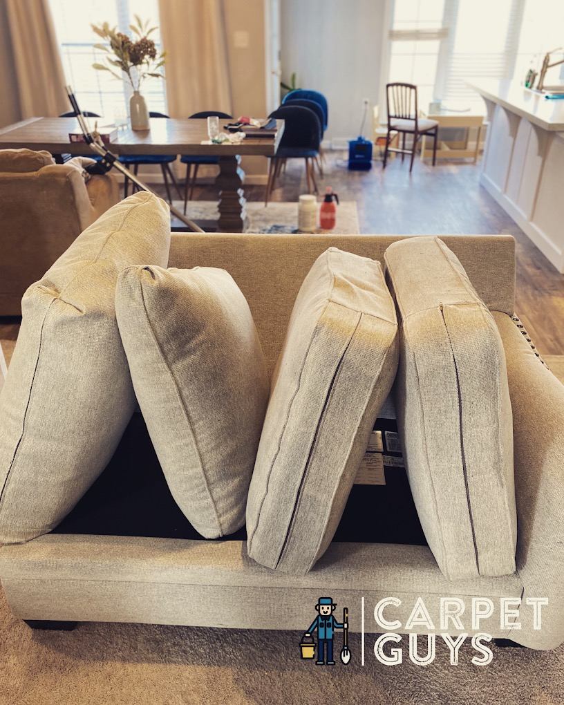
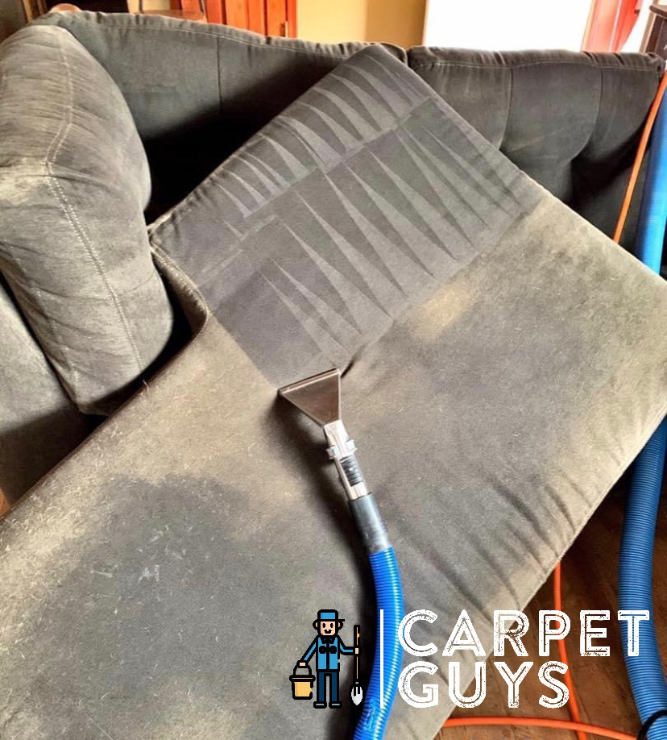
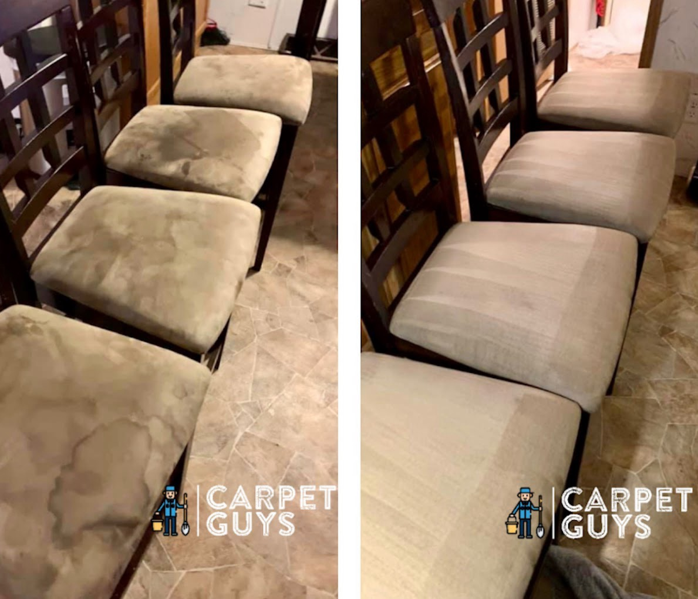
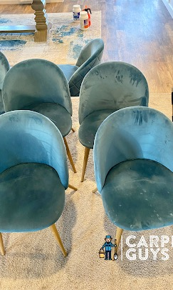
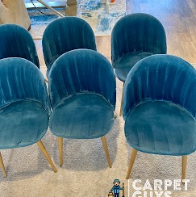

Sofas, sectionals, recliners, dining chairs, and fabric furniture collect body oils, pet hair, spills, odors, and everyday buildup. Carpet Guys cleans upholstery with fabric-safe pre-treatment, hot-water extraction, and deodorizing.
Book upholstery as a standalone visit or add it to your next carpet cleaning.

Upholstery CleaningPre-treat. Extract. Deodorize.
A careful process for the furniture your home uses most.
Fabric furniture absorbs body oils, pet dander, food spills, dust, and everyday residue over time. Vacuuming helps the surface, but upholstery cleaning helps remove buildup that settles deeper into the fabric.
Book Upholstery CleaningPet hair, dander & accidents
Targeted treatment helps break down odor-causing residue in the fabric — not just mask the smell.
Food, drink & stain buildup
Coffee, grease, crumbs, and spills can settle into fabric and often need more than surface spot-cleaning.
Body oils & everyday soil
Headrests, armrests, and seat cushions absorb oils from regular use. You often feel the buildup before you clearly see it.
Allergens & dust residue
Fabric furniture can hold dust and fine residue, especially on cushions, mattresses, and upholstered pieces used every day.
We start with the areas that need the most attention, then clean and extract the fabric to remove soil, residue, and odor-causing buildup. Dry time and optional protection depend on the fabric, condition, and service selected.
Final method depends on fabric type, condition, stains, odor, and selected service.
View Upholstery Pricing →
Upholstery ExtractionPet spots, food spills, armrests, headrests, cushion edges, and high-contact areas are treated first so the cleaning solution has time to work before extraction.
A professional upholstery tool rinses and extracts soil, residue, and cleaning solution from deeper in the fabric — not just the surface.
Fabric-safe cleaning solution and deodorizing help lift buildup and reduce odor-causing residue, leaving the furniture cleaner and fresher.
Dry time depends on fabric, airflow, and how much cleaning was needed. Fabric protector can be added when selected or recommended for high-use pieces.
Sofas, sectionals, recliners, loveseats, dining chairs, and mattresses. Fabric and most blended upholstery — not leather.
Standard sofa cleaning with pre-treatment, extraction, and deodorizing.
Two-seat furniture cleaned with the same process as a sofa, scaled for size.
Seat cushion, back, arms, and high-contact areas.
Standard sectional starting price. Oversized or 5+ section pieces quoted first.
Fabric dining chairs starting at $35 each. Final price depends on size and condition.
Starts at twin size. Surface fabric cleaning, allergen residue, and odor treatment when needed. Price by size.
Final price confirmed before cleaning starts. Severe stains, pet odor, or oversized pieces may vary — we quote first.
Upholstery can be booked alone or added to a carpet cleaning visit. Pet odor treatment and fabric protector can be quoted when needed.
Ready to clean your furniture?
Book online or request a quote if you have oversized pieces, pet odor, or multiple items.
Dining chairs and upholstered seats take on spills, body oils, pet residue, and everyday use. These examples show the difference after pre-treatment and extraction.

Before & AfterFood marks, everyday soil, and chair-seat buildup treated and extracted from fabric dining chairs. Results depend on fabric, staining, and condition.

Before
AfterFabric chairs cleaned to help reduce visible buildup and restore a cleaner, fresher appearance. Results vary by fabric age and condition.
Actual results vary by fabric type, stain age, condition, and prior treatments.
See recent Google reviews from local customers.
Common questions about pricing, fabric types, dry time, pet stains, and booking.
Book a sofa, pair it with a carpet cleaning, or request a quote for a sectional or custom piece. One crew, one visit.
Questions about your furniture? Call or request a quote and we'll help you figure out the right scope.